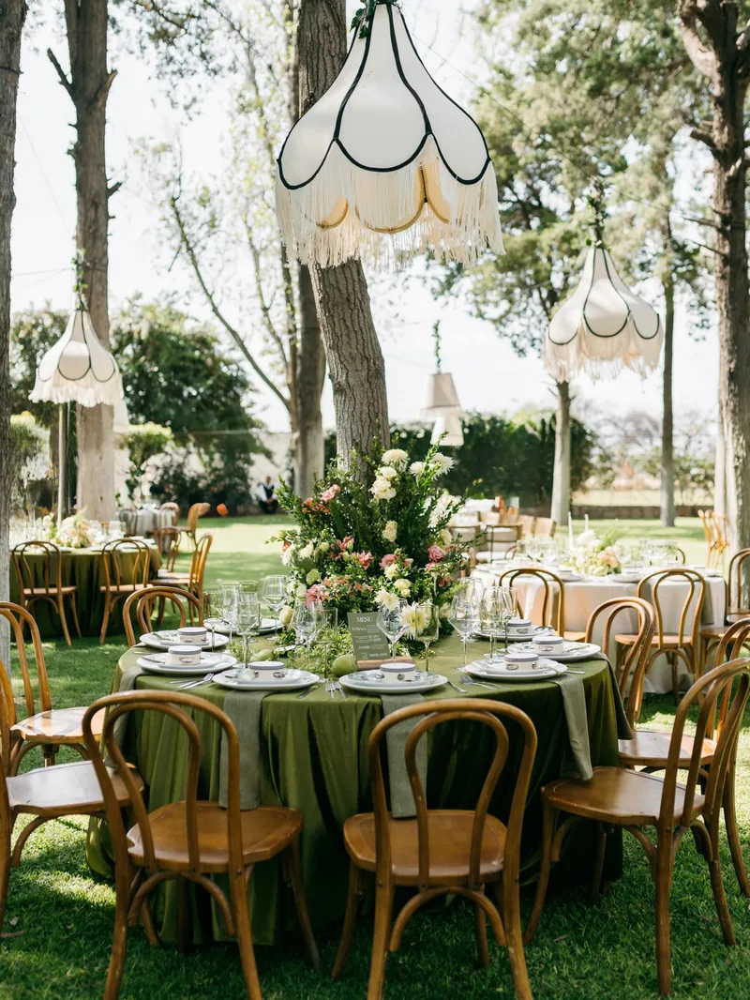
Bodas completas
Ceremonia, recepción y montaje: mesas, centros de flores y mobiliario. Y lo que sea de la casa, como una calenda de charros.
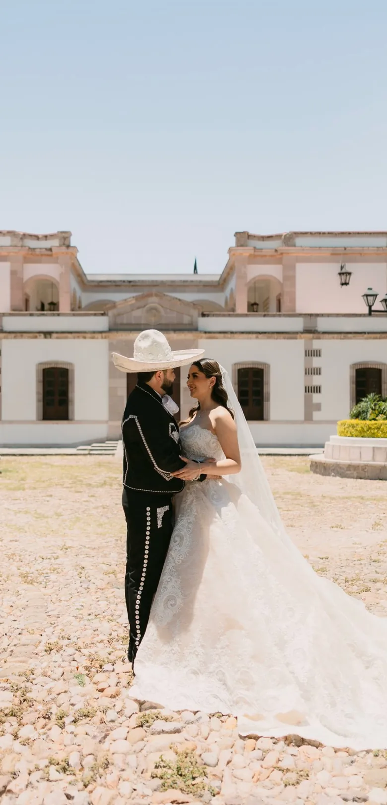
Aguascalientes · Event design
Jacqueline & Ramiro
Hacienda El Saucillo · 02 de mayo de 2026
Foto: Florencia Macías
01 · El trabajo
Cada evento suyo tiene sus propios colores. Aquí están medidos de sus propias fotos, uno por uno, no escogidos a ojo.
La calenda salió a caballo por el centro histórico de Aguascalientes. Él de charro completo; ella en calesa, con sombrilla de encaje.
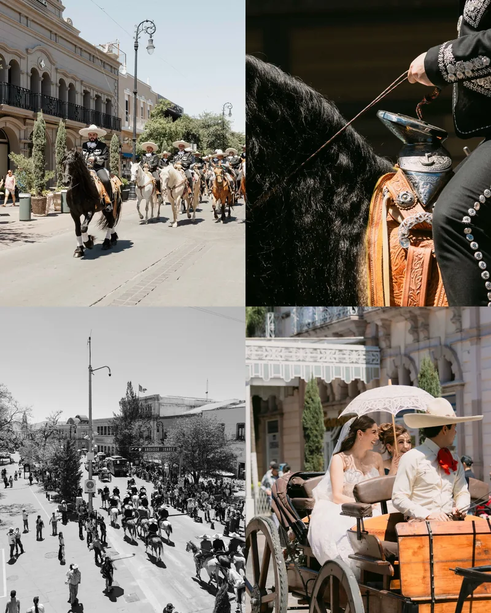
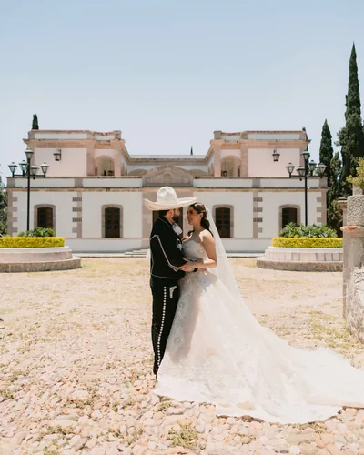
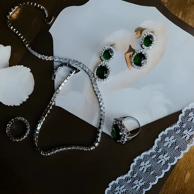
Once publicaciones seguidas del mismo evento, 22 fotos en total: del pabellón de vidrio al jardín de tarde.
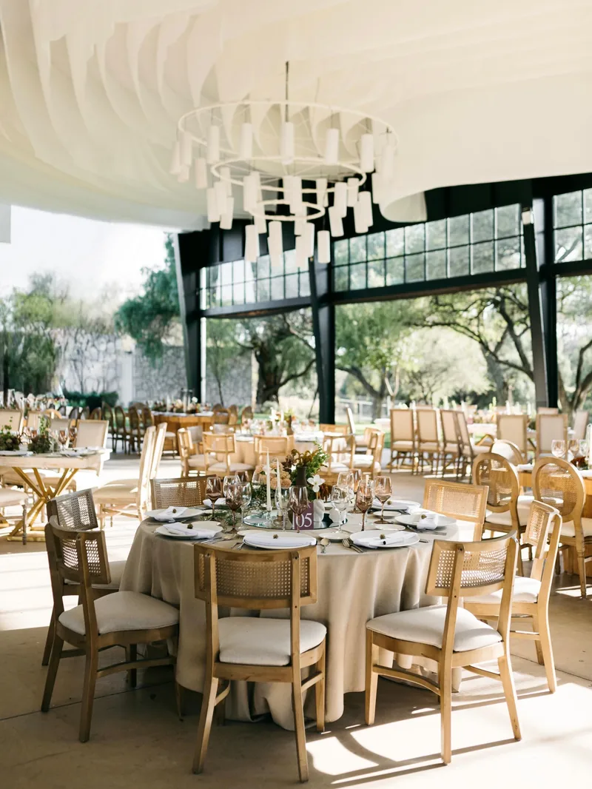
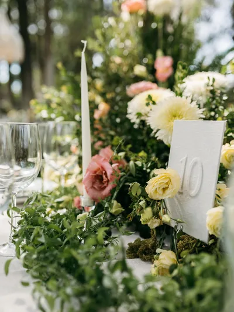
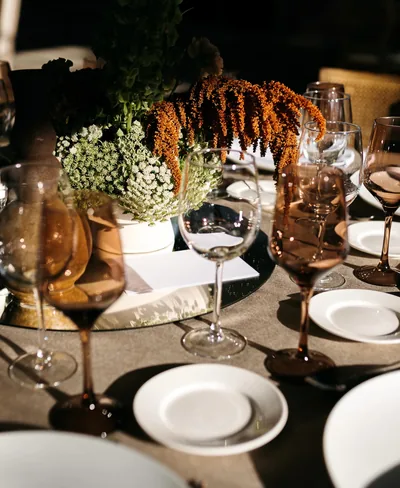
Wedding planner junto con Rosa Leda Studio. La recepción, de noche y con la luz bajita.
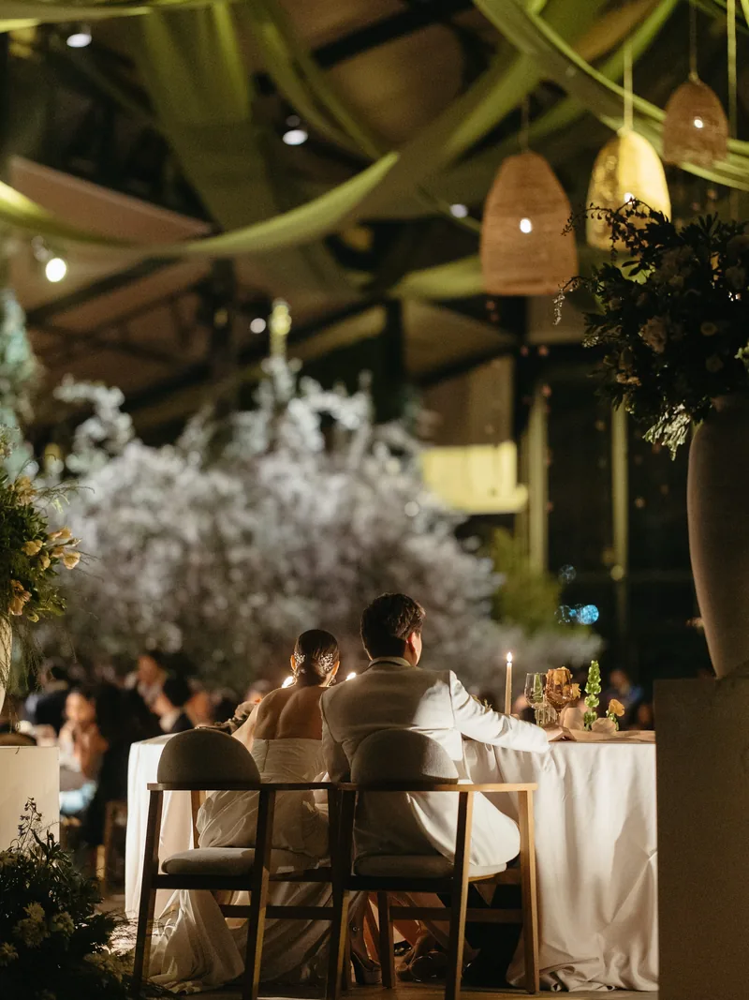
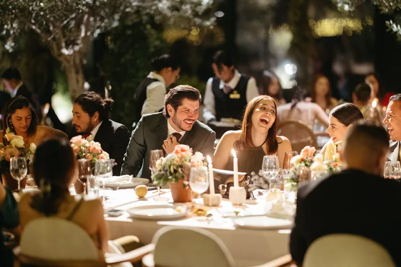
No todo lo que monta es boda. Aquí el montaje fue un kiosco de madera hecho a la medida, arco de globos en dos tonos y pastel de dos pisos.
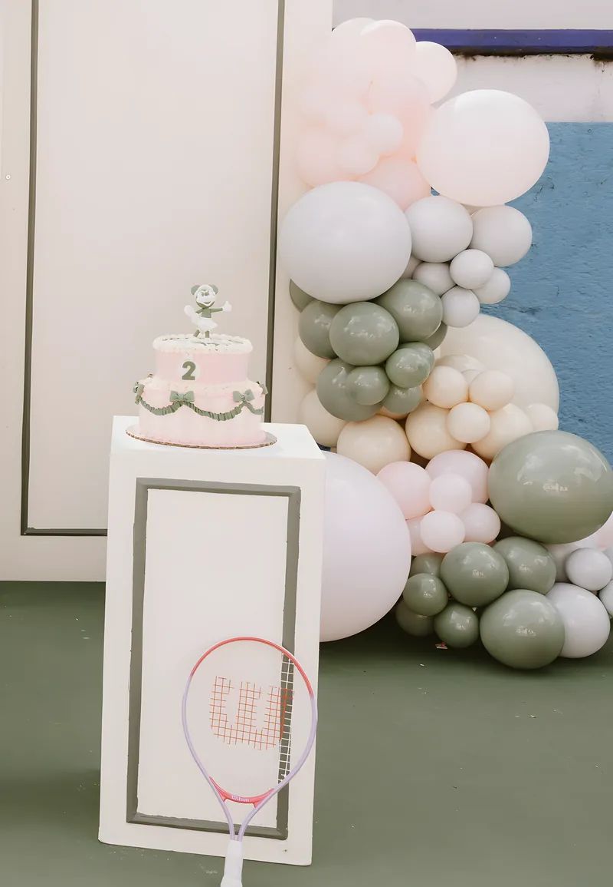
02 · Qué diseña
Los tres nombres son suyos: así tiene ordenadas sus historias destacadas de Instagram.

Ceremonia, recepción y montaje: mesas, centros de flores y mobiliario. Y lo que sea de la casa, como una calenda de charros.
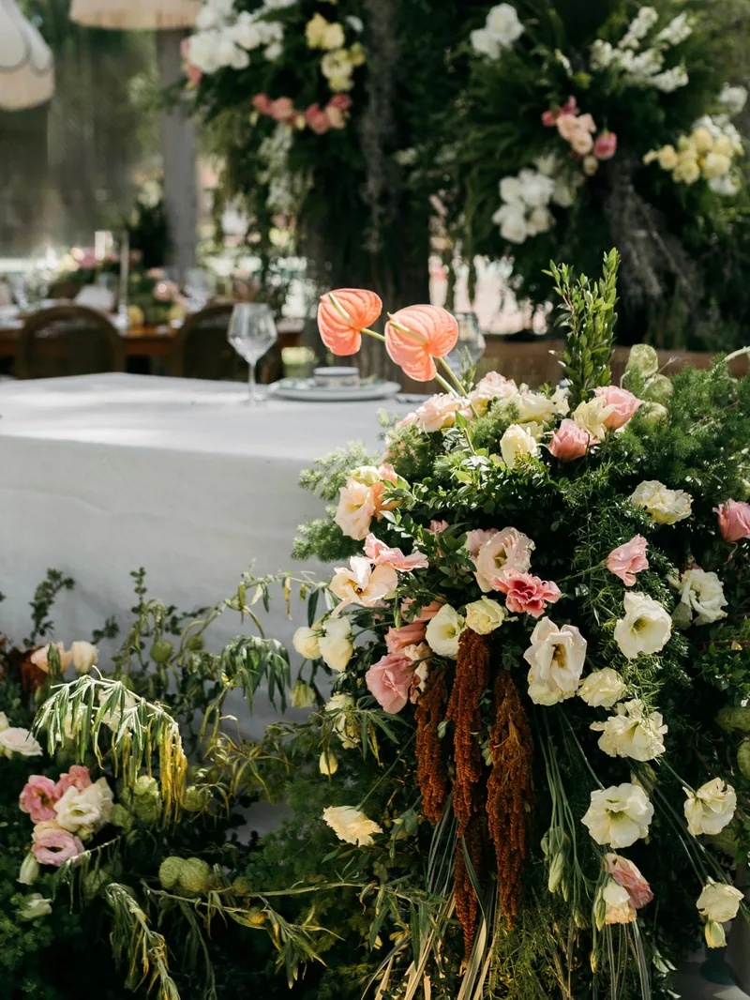
Le dedica una destacada entera al ramo de novia y al diseño floral: es su propio capítulo dentro de la boda.
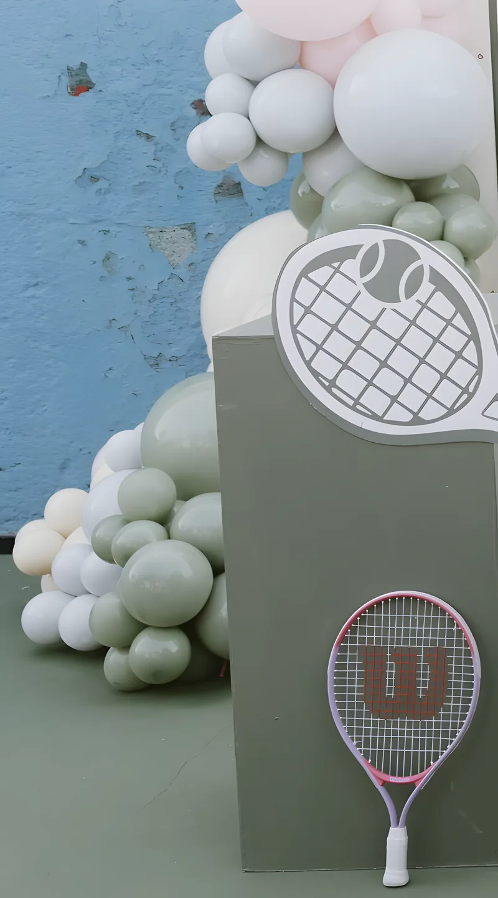
Un segundo cumpleaños con tema de tenis, montado completo: kiosco de madera a la medida, arco de globos en dos tonos y pastel.
03 · Dónde ha montado
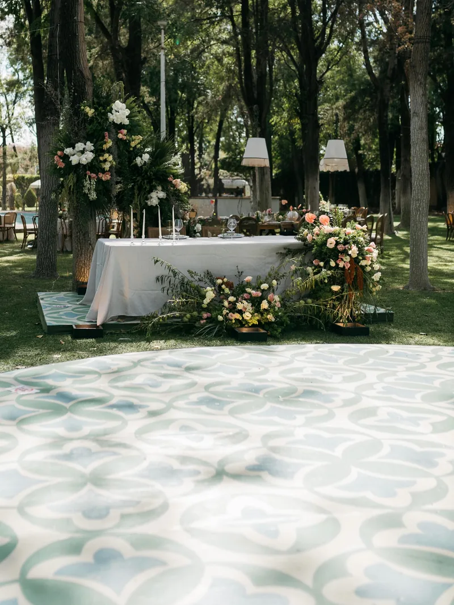
Son los venues etiquetados en sus eventos publicados, no todo lo que ha hecho. Si el tuyo no está, pregúntale.
Preguntar por mi venue“A wedding that felt deeply Mexican, beautifully personal, and impossible to forget.”
Florencia Macías, fotógrafa · sobre Jacqueline & Ramiro
“Cada detalle de la boda fue cuidado con un detalle que te hacía sentir muy especial.”
Javier Padilla, fotógrafo · sobre la boda en Tierra Tinta
Creative director
Sus bodas las fotografían Rosa Leda Studio, Florencia Macías, Javier Padilla, Héctor García, Vanya Aguayo y bymemoria: el mismo círculo de bodas de destino de la región.
La revista La Sala de Aguascalientes, en su edición de bodas, lo nombró así: “Aldo Adame transformando espacios en momentos únicos.”
04 · Agenda
Lo dice él en su perfil: now booking 2027. Dile qué fecha traes en la cabeza y te contesta al correo.
Aldo no tiene un WhatsApp público. El correo de abajo es el que él mismo pone en su perfil de Instagram.
05 · Para publicarla
Esta muestra se armó con lo que está público en tu Instagram y en el de tus fotógrafos. Con estas cinco cosas queda lista para salir en tu dominio.
Pásanoslo por el mismo chat donde te llegó esta muestra.
Las de Instagram salen comprimidas. Con los archivos originales, tuyos o de los fotógrafos, se ven a pantalla completa.
No encontramos ningún teléfono público tuyo, así que la página cierra por correo. Con tu número le ponemos el botón verde y el flotante.
Hoy tu bio dice solo “event design”. Con la lista, “Qué diseña” deja de ser lo que se ve en las fotos y pasa a ser lo que vendes.
Tus fotógrafos son de bodas de destino. Si viajas, hay que decirlo: es media página más de clientes.
No publicas precios y aquí no se inventó ninguno. Un “desde” filtra a quien no le alcanza antes de que te escriba.